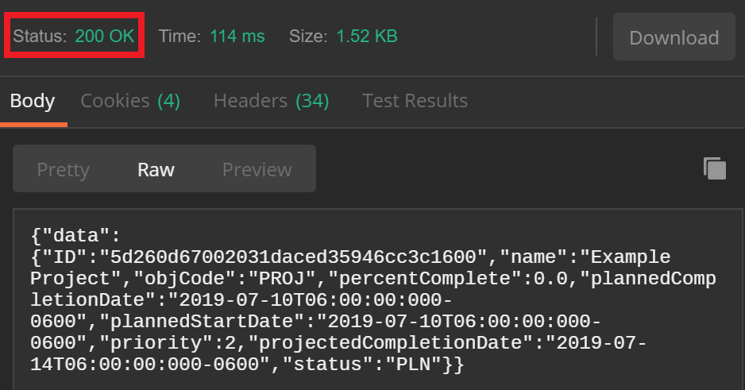
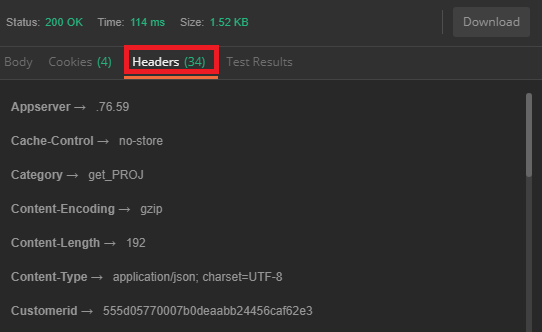
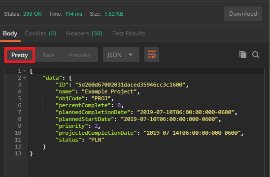
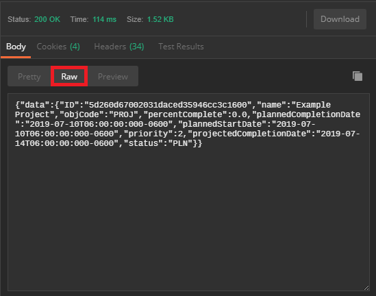

Example of a Workfront API response
Example of a Workfront API Response in Postman (Pretty)
Example of a Workfront API response in Postman (Raw)
How does a response become a program?
Analyzing responses
After making a request the API server will return an HTTP Response:
- Status Code: A three-digit code that indicates what type of Response has been sent. These codes typically fall under four categories:
- Information Responses: These are represented by numbers in the 100's and give information about server status.
- Successful Responses: These are represented by numbers in the 200's and indicate that a particular request was successful.
- Redirection messages: These are represented by numbers in the 300's and indicate that a Request returned a Redirect Response.
- Client Error Responses: These are represented by numbers in the 400's and indicate that a Request returned an error Response.
- Headers: Give more detail about the Response
- Body: The main information of the Response, based on the Resource and the corresponding Parameters made in the Request.
In Postman, the status code is summarized in a menu, separate from the header and the body:

The header information can be accessed by selecting the "headers" option underneath the status code display:

Example of a Workfront API response
The Workfront API servers return responses in JSON, generally following the structure outlined above. Depending on what type of client you're using, the aesthetic of returns vary, but the information that is returned is identical. By default, Postman returns JSON repsonses in a 'pretty' format with the header information separated out into a different tab from the body.
Here is an example of a response from the Workfront API. This is a request made to view the details of a particular project.
General request:
Specific request for this example:
This is an unedited response from the Workfront API servers:
Notice that this exact same information can be formatted differently, to make it easier to read. In this case, line breaks are used to separate the project details:
{
"data": {
"ID": "5d260d67002031daced35946cc3c1600",
"name": "Example Project",
"objCode": "PROJ",
"percentComplete": 0,
"plannedCompletionDate": "2019-07-10T06:00:00:000-0600",
"plannedStartDate": "2019-07-10T06:00:00:000-0600",
"priority": 2,
"projectedCompletionDate": "2019-07-14T06:00:00:000-0600",
"status": "PLN"
}
}
Example of a Workfront API Response in Postman (Pretty)
This is what the Postman return looks like for the same GET request described above. The color coding, line breaks, and spacing automatically applied in the "Pretty" formatting option make the response easier to read and interpret.

Example of a Workfront API response in Postman (Raw)
The "raw" format option in Postman will return identical information to the pretty format, however there will be no spacing and no color coding.
